Concept personnel, 2026
Un restaurant gastronomique imaginé de A à Z autour de la pizza, des pâtes fraîches et du burger. L'objectif : un site qui donne faim dès la première seconde, sans jamais perdre l'élégance d'une grande table.
- Type
- Site vitrine de restaurant haut de gamme
- Année
- 2026
- Rôle
- Direction artistique, copywriting, montage et étalonnage vidéo, développement
- Outils
- GSAP, ScrollTrigger, Lenis, FFmpeg
- Statut
- Concept : restaurant fictif
- Prototype
- Voir en ligne ↗
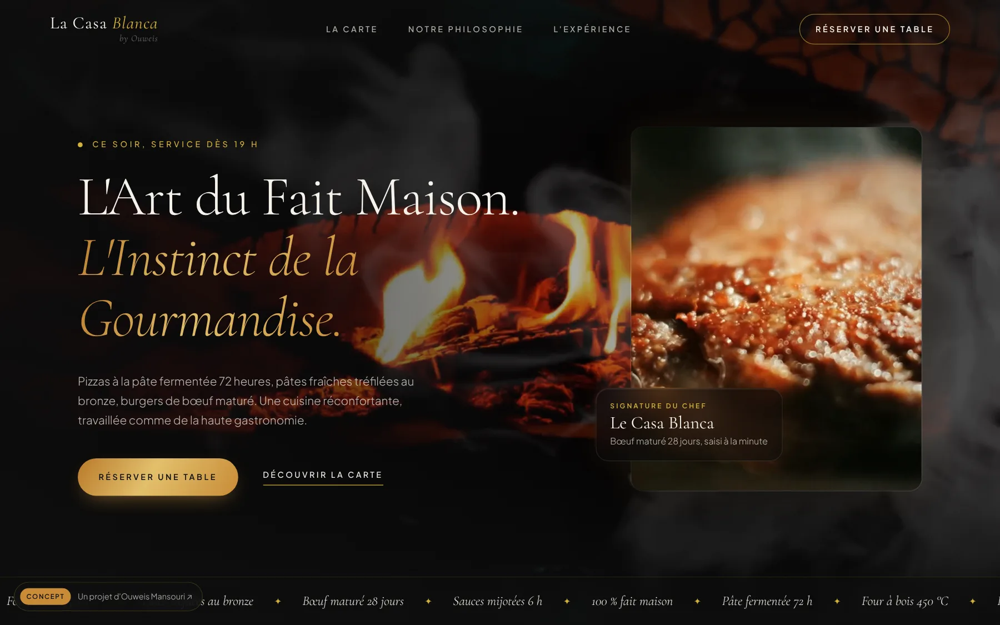
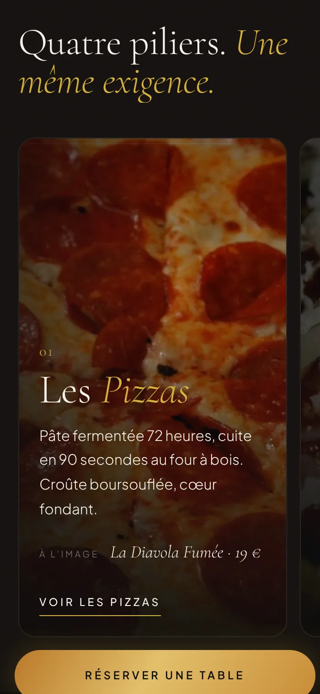
✦Concept personnel : La Casa Blanca by Ouweis est un restaurant fictif. Les vidéos proviennent de Mixkit (licence gratuite, usage commercial autorisé) ; je les ai sélectionnées, coupées et étalonnées pour leur donner une seule et même direction artistique.
Donner faim, avec élégance.
Un site de restaurant se joue en trois secondes : si l'on n'a pas faim, on ferme l'onglet. J'ai donc construit La Casa Blanca autour du mouvement : la flamme du four, la fumée, le beurre qui fond, la sauce qui frémit. Chaque section montre un geste plutôt qu'une photo figée.
Mais la gourmandise ne suffit pas à faire une grande maison. La mise en page reste éditoriale, aérée, presque silencieuse, pour que le site respire le haut de gamme et jamais le fast-food.
Gastronomie nocturne, noir, or & crème.
Un noir charbon et un brun expresso pour faire exploser les couleurs chaudes des plats, l'ambre et l'or brossé pour les filets et les boutons, la crème pour la lecture et un rouge carmin en touches. Cormorant Garamond, très contrastée, pour les titres ; Plus Jakarta Sans, fine et espacée, pour les textes.
L'Art du Fait Maison
Cormorant Garamond
Pâte fermentée 72 heures
Plus Jakarta Sans
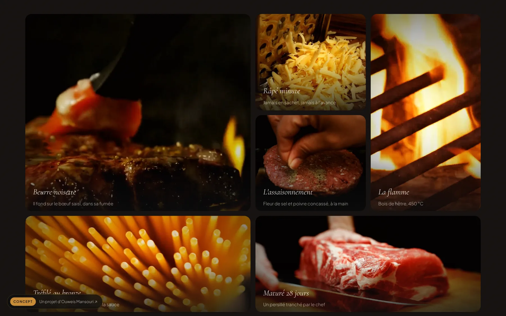
Dix-sept plans, un seul étalonnage.
Sans tournage, j'ai trié une centaine de vidéos libres de droits pour ne garder que les plans les plus appétissants. Je les ai coupés au meilleur moment, puis étalonnés avec un même réglage (noirs profonds, hautes lumières ambrées, vignettage), pour qu'ils semblent sortir du même shooting.
Chaque boucle est compressée pour le web : 14 Mo pour 17 vidéos, chacune précédée d'une image fixe qui apparaît pendant le chargement. Une vidéo ne se charge qu'à l'approche de l'écran et ne joue que lorsqu'elle est visible.
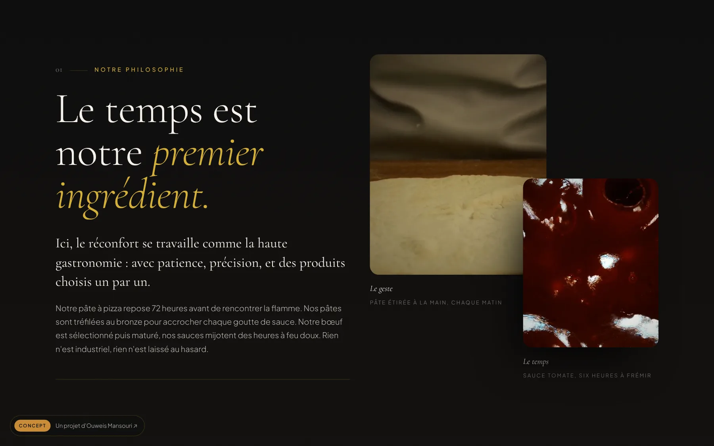
Manifeste : la pâte et la sauce en parallaxe
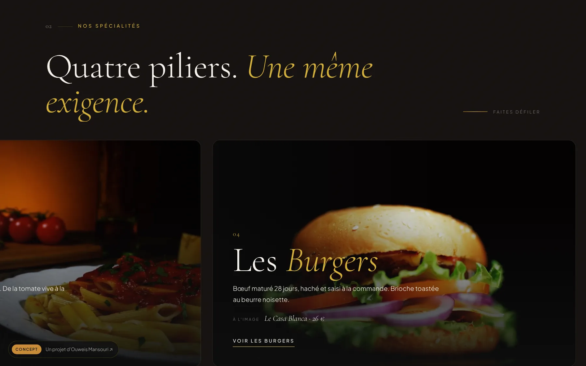
Quatre piliers : défilement horizontal épinglé
Du désir à la réservation.
Le site se parcourt comme un dîner : le hero ouvre l'appétit, le manifeste rassure sur les produits, les quatre piliers présentent les spécialités, la carte détaille les plats, puis la salle, la vision du fondateur et les avis préparent la réservation.
Le module de réservation va à l'essentiel : convives, frise de dates, horaires calculés selon les jours d'ouverture, coordonnées. Sur mobile, un bouton « Réserver une table » reste toujours à portée de pouce.
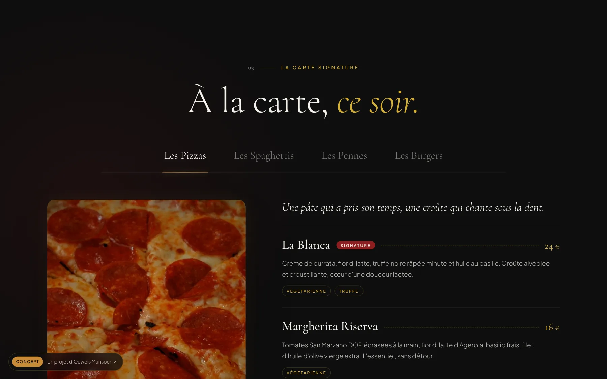
La carte : onglets et prix en pointillés
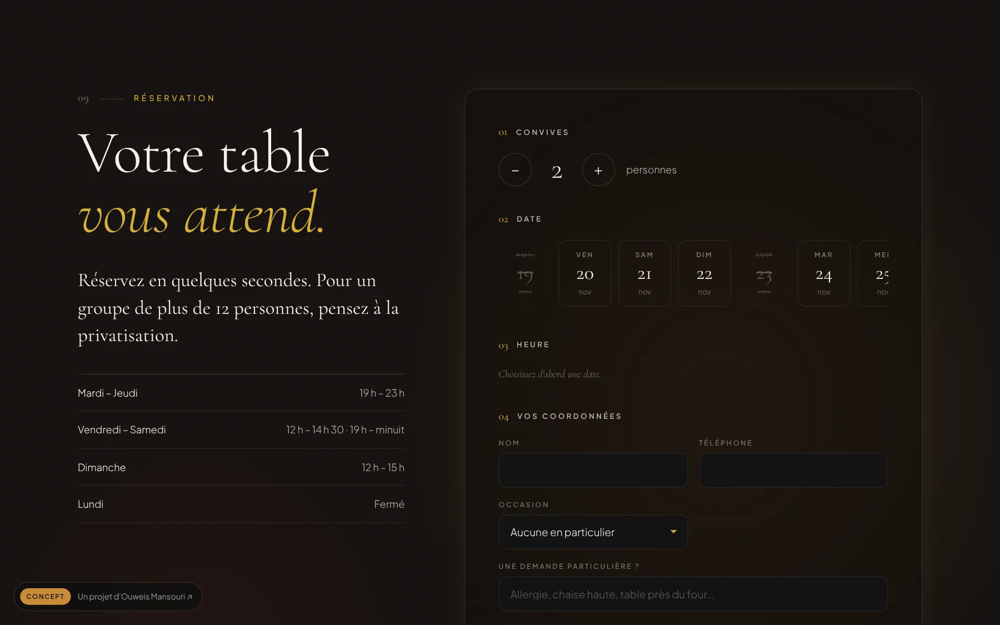
Réservation : dates et horaires réels
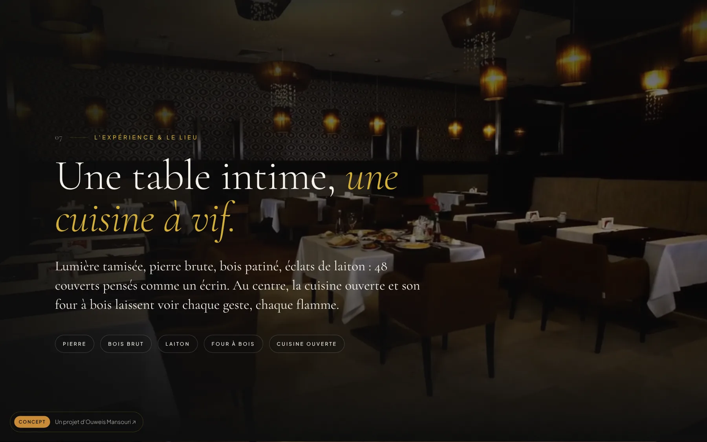
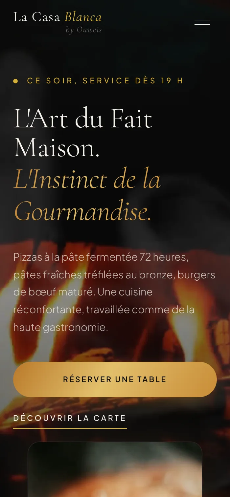
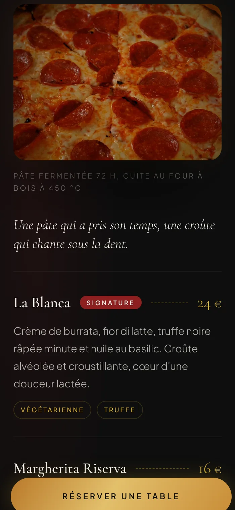
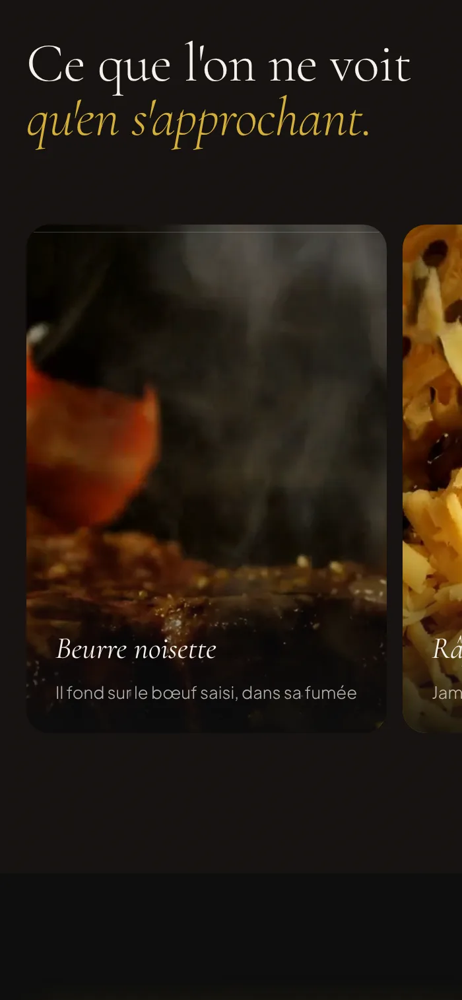
Chaque détail compte.
Hero vivant
Four à bois en vidéo, vraie fumée en surimpression, carte flottante du plat signature et titre révélé ligne par ligne.
Piliers horizontaux
Section épinglée qui défile à l'horizontale sur ordinateur, cartes à balayer sur mobile, liens vers l'onglet de la carte.
Vidéos économes
Chargement à l'approche, lecture seulement à l'écran, affiches seules en mode économie de données.
Carte gastronomique
17 plats décrits par leurs textures, onglets au clavier, lignes pointillées jusqu'aux prix.
Réservation fluide
Horaires réels selon le jour, messages d'erreur clairs, confirmation soignée, bouton mobile toujours visible.
Copywriting
Manifeste, carte, menu en trois temps et vision du fondateur écrits pour donner faim.
Dubaï Center

✦ Un projet en tête ?